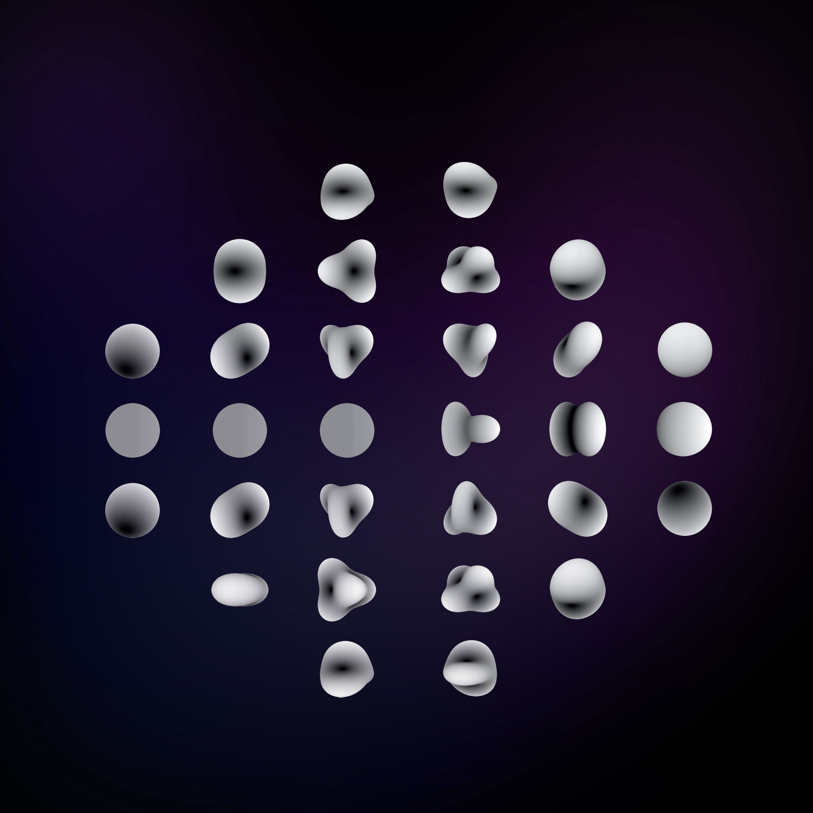

Summary
Harmonic oscillations on $S^2$
Spherical harmonics, $Y_{l}^m: S^2 \rightarrow \mathbb{C}$, are functions of two angles: $\theta$ and $\phi$. They provide a complete orthogonal basis for functions on a sphere, $S^2$. In comparison, circular harmonics offer a basis for functions on the circle $S^1$, whilst Wigner D-matrices play a similar role for the group $\mathrm{SO}(3)$. These functions are constructed using the associated Legendre functions $P_{l}^m(\cos \theta)$ and the complex function ${e^{i m \phi}=\cos (m \phi)+i \sin (m \phi)}$. Spherical harmonics are defined as: $$ {\small Y_{l}^m(\theta, \phi)=(-1)^m \sqrt{\frac{2 \ell+1}{4 \pi} \frac{(\ell-m) !}{(\ell+m) !}} P_{\ell}^m(\cos \theta) e^{i m \phi} } , $$ where $(-1)^m$ serves as the normalisation factor and the angles $\phi$ and $\theta$ are part of the spherical coordinate set $(r,\theta, \phi)$. Any function of $\theta$ and $\phi$ can be thought of as a function on the surface of a sphere. Thus, a handy interpretation of spherical harmonics is as a set of functions on the surface of a sphere. The relationship between these angles and a point on a sphere's surface is: $$ x=r \sin \theta \cos \phi, \quad y=r \sin \theta \sin \phi, \quad z=r \cos \theta . $$ For illustrative purposes, the solutions for the initial spherical harmonics, with $l$ values of $0, 1,$ and $2$, are: $$ \begin{array}{c|ccc} \scriptstyle -2 & & & \scriptstyle \sqrt{\frac{15}{32 \pi}} \sin ^2 \theta e^{-2 i \phi} \\ \scriptstyle -1 & & \scriptstyle \sqrt{\frac{3}{8 \pi}} \sin \theta e^{-i \phi} & \scriptstyle \sqrt{\frac{15}{8 \pi}} \sin \theta \cos \theta e^{-i \phi} \\ \scriptstyle 0 & \scriptstyle \sqrt{\frac{1}{4 \pi}} & \scriptstyle \sqrt{\frac{3}{4 \pi}} \cos \theta & \scriptstyle \sqrt{\frac{5}{16 \pi}}\left(3 \cos ^2 \theta-1\right) \\ \scriptstyle 1 & & \scriptstyle -\sqrt{\frac{3}{8 \pi}} \sin \theta e^{i \phi} & \scriptstyle -\sqrt{\frac{15}{8 \pi}} \sin \theta \cos \theta e^{i \phi} \\ \scriptstyle 2 & & & \scriptstyle \sqrt{\frac{15}{32 \pi}} \sin ^2 \theta e^{2 i \phi} \end{array} $$ where columns correspond to the frequency $l$, and rows correspond to the degree $m$, which spans from $-l$ to $l$.